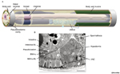
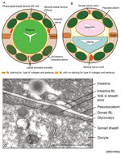
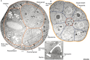
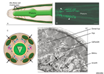
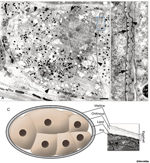

Handbook - Hermaphrodite
Subcellular and Pericellular Structures Pericellular Structures see also Gap Junctions
7 References
Figures  PeriFIG 1 - Pseudocoelom  PeriFIG 2 - Basement membranes line pseudocoelom  PeriFIG 3 - Basal lamina covering the germ line  PeriFIG 4 - Hemicentin tracks in the head  PeriFIG 5 -Fertilization membrane and eggshell